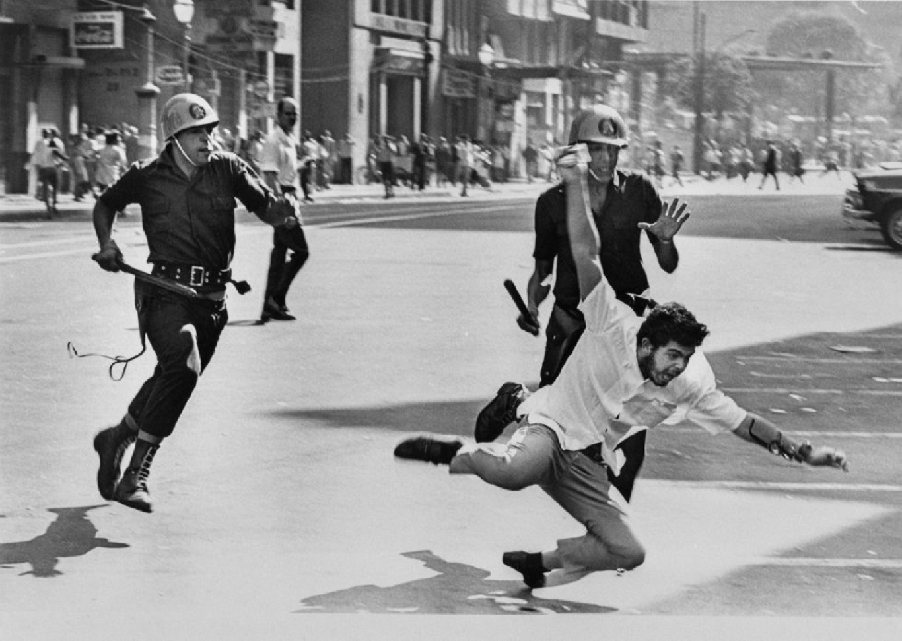
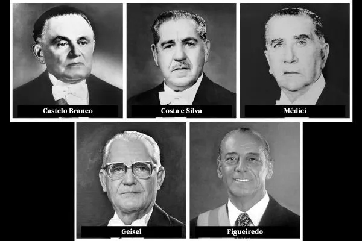

Oque foi a Ditadura Militar?
Por: Adrielly e Vêronica.
Foi o regime autoritário que governou o Brasil entre 1964 e 1985, iniciado com o golpe que derrubou o presidente democraticamente eleito João Goulart. O período foi marcado pela ausência de democracia, supressão de direitos constitucionais e forte centralização do poder nas mãos de generais do Exército.

Tudo bem, vimos oque foi a ditadura militar, porém quais foram suas principais características?
1. Falta de Democracia:
Presidentes eram escolhidos de forma indireta e partidos políticos foram proibidos, restando apenas dois permitidos pelo governo.Esse tópico pode ser mais abordado em 4 pontos:
I. Sem voto popular: População proíbida de eleger o presidente, governadores e prefeitos das grandes cidades.
II. Apenas dois Partidos: Partidos antigos foram extintos, restando o do governo (ARENA) e uma oposição controlada(MDB)
III. Políticos Perseguidos: Deputados e senadores da oposição tinham seus mandatos cassados e direitos políticos suspensos.
IV. Congresso Fechado: Os generais governavam sozinhos e fechavam o Congresso quando os deputados discordavam deles.

2. Repressão Estatal:
Utilização de tortura, prisões arbitrárias, assassinatos e desaparecimentos forçados contra opositores do regime.Tópicos que ajudaram a entender melhor sobre:
I. Censura: O governo censurava jornais, revistas, músicas, filmes, peças de teatro e programas de televisão. Obras consideradas críticas ao regime eram proibidas, e artistas, escritores e jornalistas podiam sofrer perseguição.
II. Perseguição Política: Estudantes, sindicalistas, professores, intelectuais, religiosos e políticos que se opunham ao regime eram monitorados, demitidos, presos ou forçados ao exílio.III. Prisão e Tortura: Órgãos de segurança do Estado prenderam milhares de pessoas suspeitas de oposição. Diversos relatos e investigações oficiais confirmam o uso sistemático de tortura durante interrogatórios, além de casos de desaparecimentos forçados e execuções extrajudiciais.
IV. Suspensão de Direitos: Com medidas como o Ato Institucional nº 5, o governo ampliou seus poderes, podendo fechar o Congresso Nacional, cassar mandatos políticos, suspender direitos individuais e restringir o acesso ao Judiciário em determinadas situações.
V. Orgãos de Repressão: Instituições como o Departamento de Ordem Política e Social e o Destacamento de Operações de Informações - Centro de Operações de Defesa Interna atuaram na vigilância, investigação e repressão de opositores.
Mas quais foram esses impactos?
1. Violações de direitos humanos;
2. Clima de medo e autocensura;
3. Enfraquecimento da participação política e das instituições democráticas;
4. Marcas psicológicas e sociais nas vítimas e em seus familiares.
3. Censura Prévia:
Controle estrito de notícias, novelas, músicas, peças de teatro e livros para evitar críticas ao governo.Tópicos que ajudaram a uma melhor compreensão do assunto:
I. Jornais e Revistas: Em muitos casos, os veículos precisavam submeter reportagens à análise dos censores antes da publicação. Matérias que tratassem de temas como repressão política, greves, corrupção ou críticas ao governo podiam ser vetadas. Quando isso acontecia, alguns jornais substituíam os trechos censurados por receitas culinárias, poemas ou espaços em branco para indicar ao leitor que o conteúdo havia sido cortado.
II. Música: Letras de canções eram examinadas por órgãos de censura. Muitas foram proibidas ou tiveram trechos alterados. Alguns compositores recorreram a metáforas e linguagem simbólica para expressar críticas sem serem facilmente identificados pelos censores.
III. Cinema e Teatro: Filmes e peças precisavam de autorização oficial para serem exibidos. Obras podiam ser proibidas, sofrer cortes ou ter sua classificação modificada.
IV. Televisão e rádio: Programas de entretenimento, jornalismo e novelas também eram fiscalizados. Determinados assuntos eram proibidos, e emissoras podiam sofrer sanções caso desrespeitassem as normas de censura.
Consequências:
1. Limitou a liberdade de expressão e de imprensa;
2. Reduziu o acesso da população a informações sobre acontecimentos políticos e sociais;
3. Incentivou a autocensura de jornalistas, artistas e escritores, que evitavam determinados temas para não sofrer punições;
4. Influenciou a produção cultural, levando muitos autores a usar alegorias, ironias e simbolismos para transmitir mensagens críticas.
4. Economia Instável:
Alternou entre um período de forte crescimento (o "Milagre Econômico") e uma crise profunda nos anos 80, gerando hiperiEntre todos os assuntos abordados, esse é o mais "simples" de se explicar para você leitor(a), pois são tópicos diretos e objetivos.
Entre eles estão:
1. Crescimento econômico durante o Milagre Econômico Brasileiro;
2. Aumento da dívida externa para financiar obras e investimentos;
3. Crescimento da inflação a partir da segunda metade da década de 1970;
4. Aumento do desemprego e da desigualdade social;
5. Redução do crescimento econômico e crise no início da década de 1980;
6. A instabilidade econômica contribuiu para o enfraquecimento do regime e para a redemocratização do Brasil.